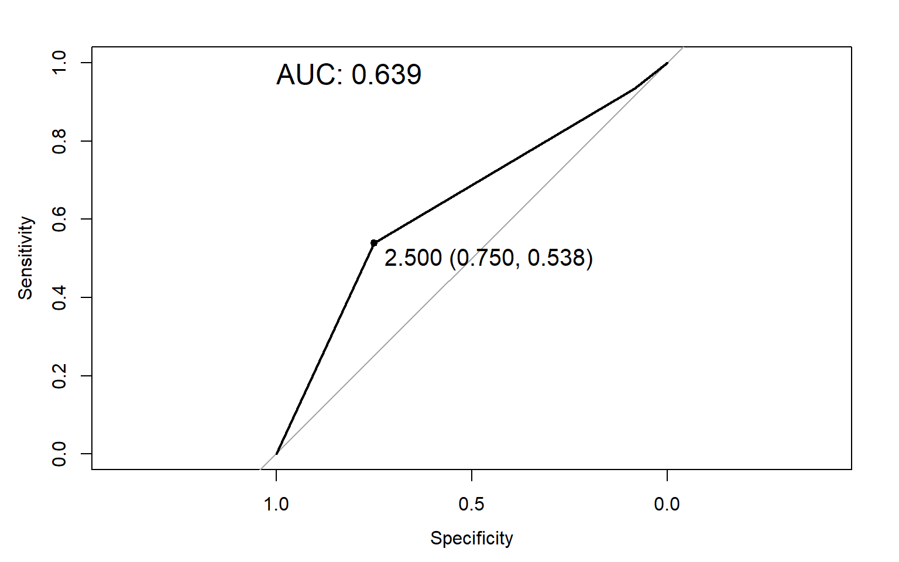

Laboratório de Estatística Aplicada
Introdução
A fim de fixar os conhecimentos passados em sala de aula, foi passado um banco de dados com informações sobre 16 colônias de abelhas durante um ano.
Por se tratar de uma análise entre as colônias de um determinado apiário, os dados foram considerados como populações.
Variáveis
O banco de dados fornecido contém as seguintes variáveis:
- Meses;
- Colonias;
- Comprimento do canudo;
- Diametro do canudo;
- Número de potes de mel;
- Número de discos;
- Tamanho dos discos;
- Peso;
- Estatistica populacional
Além do mais, a fim de procurar outras perspectivas para os dados, foram adicionadas as seguintes variáveis:
- Estação
- Peso a cada 100 abelhas
Objetivos
Com base nisso, esse trabalho possui os seguintes objetivos:
- Analisar o desempenho das colônias ao longo do ano;
- Analisar a diferença ente as colônias;
- Buscar variáveis que estejam relacionadas com a produção de mel;
- Criar um modelo capaz de prever a quantidade de mel produzida por uma colônia.
Análise descritiva
Comparação entre colônias
Análise por grupos
Podemos perceber que na maioria das variaveis existe uma alteração com o passar dos meses no mesmo momento, com diferença da força das variação com diferentes colonias
Dados de acordo com a colônia e estação
Podemos perceber que existe uma alteração de aumento e diminuição com o passar das estações e isto tambem acontece quando modificamos a variavel do x entre as colonias.
Correlação dos dados

Pode-se notar uma forte correlação linear positiva entre o número de discos e a estimativa da população, além de correlações lineares positivas moderadas entre os seguintes pares de variáveis:
- diâmetro do canudo x comprimento do canudo
- número de discos x número de potes de mel
- peso x número de potes de mel
- estimativa da população x número de potes de mel
- estimativa da população x tamanho dos discos
- estimativa da população x peso
Testes
Testando normalidade dos dados
Como visto nos testes acima, rejeita-se a hipótese de normalidade para todas as variáveis.